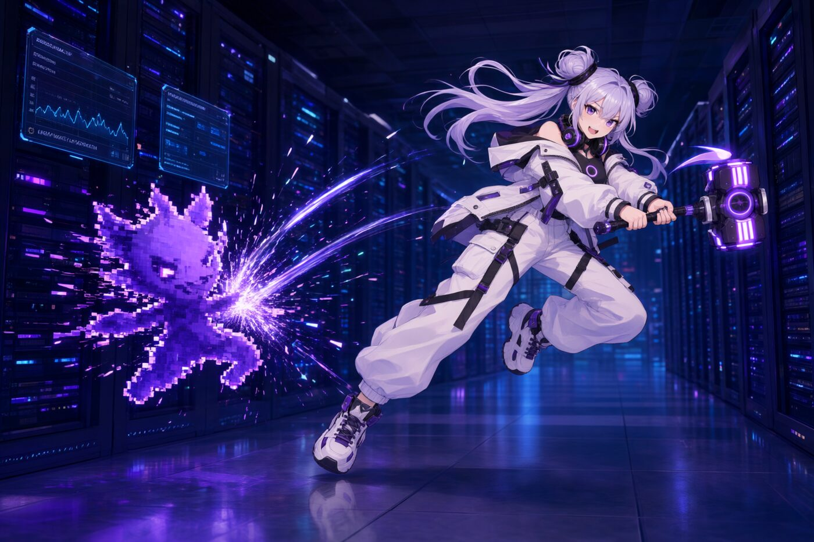

HD2LAB IDLE OPS
동기화 중…
SHARED WORLD · LV
– –
다음 레벨까지 –
향단이가 서버실을 누비며 이슈를 처리하고 있습니다. 화면의 버그 전투는 관전 연출이며 서버 수치와는 무관합니다.
아직 기록이 없습니다. 관리자 콘솔에서 첫 증설을 기다리는 중입니다.

HOW IT WORKS
공유 월드에 접속하는 중…
CONNECTION LOST
잠시 후 다시 시도해 주세요. 서버가 켜져 있으면 진행은 계속되고 있습니다.
이 화면은 JavaScript가 필요합니다.